Note: If you’d like to skip straight to the analysis, skip to Section 6.
The London Marathon is an annual race (26.2mi/42.2km) held annually in April since 1981, and is one of the 6 world marathon majors. Several marathon world records have been set here, and the course is relatively flat with a sudden downhill after the second mile. This analysis uses the data of 234,613 runners from 2014-2019, and covers both finisher demographics and best strategy to pace a marathon.
Why did I choose to look at London? As someone who’s never run a marathon before, I was particularly interested in the best approach to pacing a marathon (negative/positive/even). Negative splits mean running faster in the second half, positive splits mean the opposite, and even splits mean running a consistent pace throughout. Common running wisdom and several other people with quantitative backgrounds have looked at this before; the conclusion is even/negative splits are preferable over positive. Jared Ward (6th place at Rio 2016 marathon and BYU stats professor) wrote a master’s thesis on the topic, taking a Bayesian approach to modeling split pacing strategies using quarter splits (split time through the 4 quarters of the race). I read an article by Jonathan Savage who looked at a comprehensive set of data from NYC and Chicago, but he only analyzed the half splits (first/second). So I wanted to find a race that had comprehensive split data across the entire race (every 5K) - London was the first one I found, and thankfully it wasn’t terribly difficult to scrape the data.
Data was collected using python and BS4 and stored in an sqlite database for easy access. The code for that is availible in london.py. Note: you have to reconfigure it every time for each gender/year/elite combination, since the HTML of the results page sometimes changes from year to year.
The 2014-2019 data contains 234,613 finishers. People who DNFed (Did Not Finish) the race were not present in the race results, so they unfortunately have been excluded. Of the finishers, roughly 6,000 of them had missing split data at some point throughout the race, so these runners were included in the demographic analysis but excluded from the pace analysis.
Here are the finish times of the runners in the top-x% for London 2019.
| Top Percentile | Male | Female |
|---|---|---|
| 0.1% | 02:15:06 | 02:31:53 |
| 0.5% | 02:30:12 | 02:56:07 |
| 1% | 02:35:39 | 03:03:00 |
| 5% | 02:52:03 | 03:24:33 |
| 10% | 03:03:36 | 03:36:55 |
| 25% | 03:34:30 | 04:04:30 |
| 50% | 04:09:22 | 04:45:30 |
| 75% | 04:50:36 | 05:29:01 |
For reference (using US based standards), the Boston Marathon qualifying standards for males/females in the 18-34 age group respectively are 3:00:00 and 3:30:00, which corresponds to roughly the top 10% of 2019 runners. The Olympic Trials qualifying standards are 2:19:00 and 2:45:00, which corresponds to just over the top 0.1% of men and slightly under the 0.5% of women.
With that in mind, here are some stats:
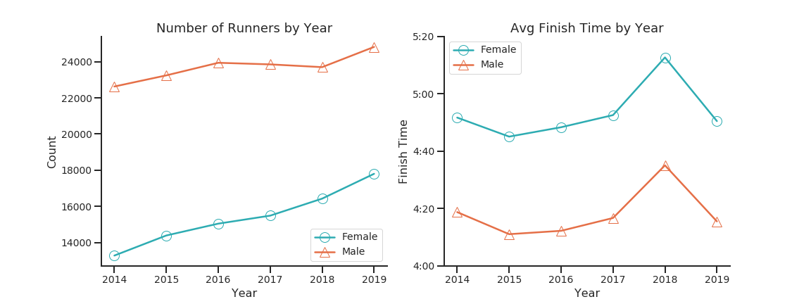
It’s no surprise that running participation increases annually as running has become quite a popular hobby. Now what happened in 2018? According to marathon officials, 2018 reached record temperatures (23C/73F) - and since it’s no surprise that temperature has a measured negative effect on running performance in longer races, we can see how detrimental the weather was for the average finisher.
Here’s the gender ratio over time, and the distribution of finish times.
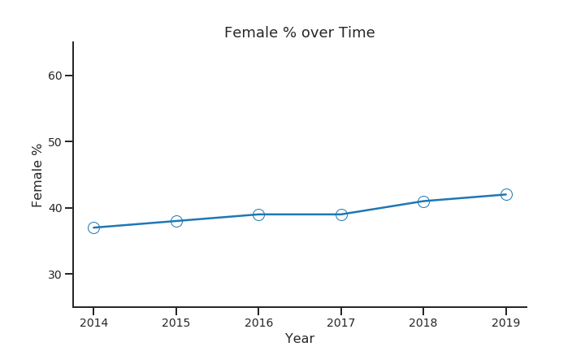
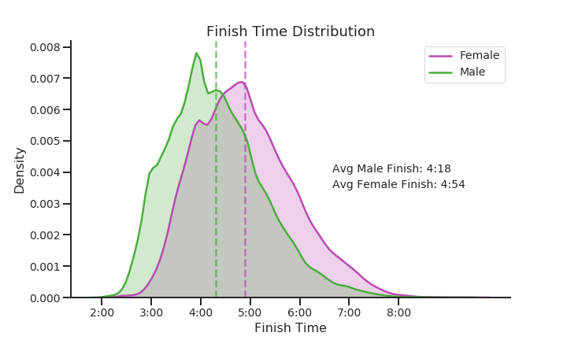
Here are the age groups: note that young people were binned in a relatively large category, so naturally there’s going to be more variance in the 18-39 group than the 40-44 group due to the sample size differential.
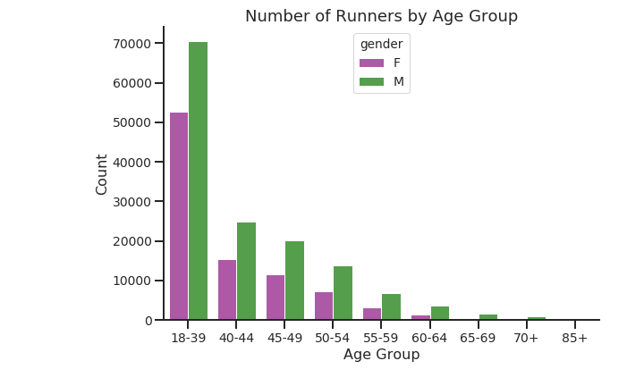
If you’re new to the world of marathon running in general, you might think that it’s a young person’s sport. However 48% of the 230,000+ participants were 40 and older, so it shows that it’s never too late to get started. Indeed, as the next figure shows, younger isn’t necessarily faster.
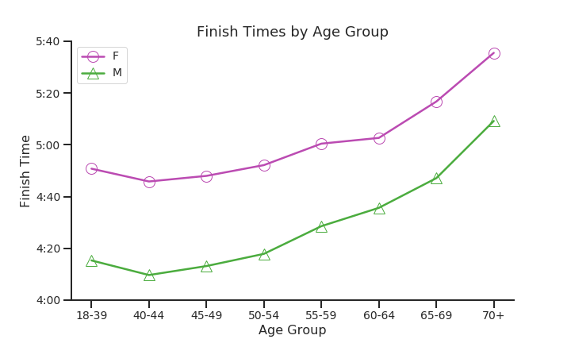
With respect to age groups, we can see that the the 40-44 year olds are the sweet spot between age and performance. This could be due to having more race experience or just the compounding effect of years of training.
What about investigating the effect of race experience on finish times? Since we have data spanning multiple years, this allows us to check for repeat runners: runners in 2019 who’ve raced at least once between 2014-2018. Runners were matched if they had the same name, country, and belonged to the same age category or the age category right below to account for aging; for example, (Jane Doe, USA, 40-44) would match to (Jane Doe, USA, 40-44) or (Jane Doe, USA, 18-39), so the matching may not be perfect. Roughly 21% of the 41,000+ 2019 runners fell into this category.
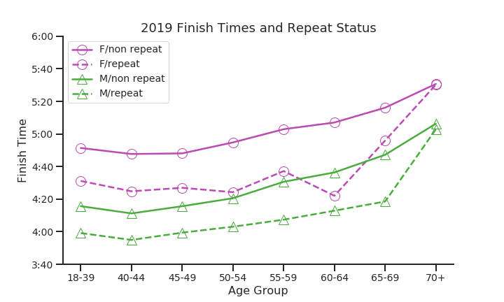
The effect is clear: repeat runners are consistently faster on average than their non-repeat counterparts across all age groups except for the 70+ category. It’s fairly surprising to see how consistent the differential is: respectively, repeat men and women were 17 and 21 min faster on average.
More surprisingly, we can even see that repeat female runners between 60-64 outperformed their non-repeat male counterparts. In fact, they’re almost as fast their repeat male counterparts! This can be attributed to selection bias - since the number of repeat female marathoners aged 60-64 is a relatively small group, you’re likely to be a pretty serious runner: serious enough to contend with the 60-64 male repeat runners.
One of the main reasons why I chose to analyze London was the availibility of 5K split data (the time differential between every 5K of the race, from start to 42.2K). Using this, we can immediately calculate the paces of each runner as they progress through the race. I needed some metric to summarize the ‘consistency’ of a runner. A consistent runner should run all of their 5K splits close to their overall average marathon pace.
One could compute the standard deviation of a runner’s paces, but consider the following two runners in a 3 mile race:
| Runner | Mile 1 | Mile 2 | Mile 3 | Avg | StdDev |
|---|---|---|---|---|---|
| A | 7:20 | 7:30 | 7:40 | 7:30 | 1:40 |
| B | 4:20 | 4:30 | 4:40 | 4:30 | 1:40 |
Both runners would have the same spread or standard deviation from their average (1:40). However, the difference between a 4:20 and 4:30 mile is much larger than the difference between a 7:20 and a 7:30 mile; this is just a reflection of how running fast gets exponentially hard. To account for this, we can divide the standard deviation by the average pace, which yields the coefficient of variation (CoV).
\[CoV (\%) = \frac{std_X}{mean_X} \times 100\]
Now we can make meaningful comparisons between runners.
| Runner | Mile 1 | Mile 2 | Mile 3 | Avg | StdDev | CoV |
|---|---|---|---|---|---|---|
| A | 7:20 | 7:30 | 7:40 | 7:30 | 1:40 | 22% |
| B | 4:20 | 4:30 | 4:40 | 4:30 | 1:40 | 37% |
Indeed, Runner A has the lower CoV, which reflects that they ran more consistently due to their average pace being slower. We can now continue with the analysis!
These are the results of calculating the CoV for every runner based on their 5K, 10K, etc. up to their 42.2K splits. We can then examine the distribution of the CoV by gender.
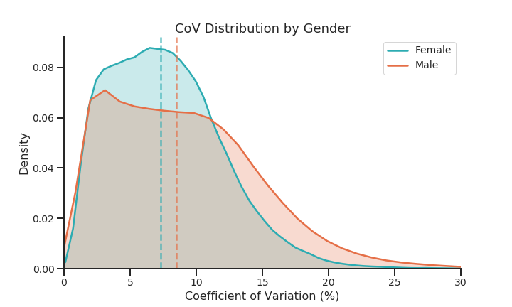
We can see that the female distribution is centered slightly lower. The median female CoV is roughly 1% higher at 7.3% vs 8.5%; in other words they’re around 1% more consistent in pace than males.
What about our group of 2019 repeat runners?
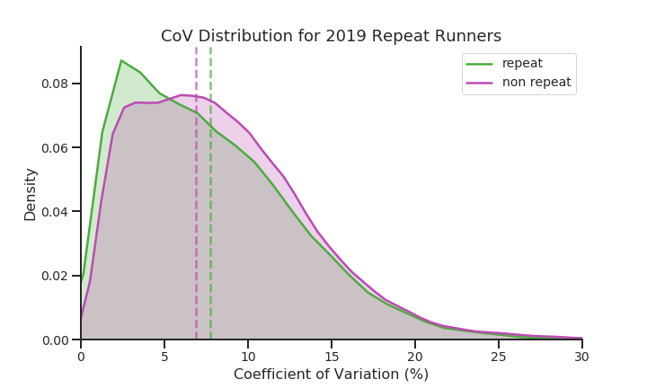
The distribution is roughly the same, but we can still see that the median of the repeat runners is slightly higher than that of the nonrepeat runners.
What about for elite runners?
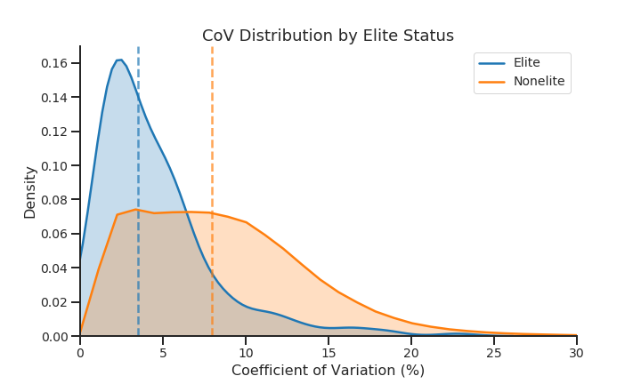
It’s no surprise that elites are more consistent than nonelite runners. Conventional running wisdom says that optimal race times come as a result of even pacing. We will explore this later down below!
Things get more interesting when you stratify runners by their finish quartile (with 1,2,3,4 corresponding to the top (25, 50, 75, 100)%) and gender.
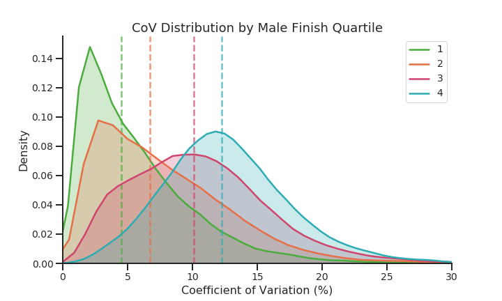
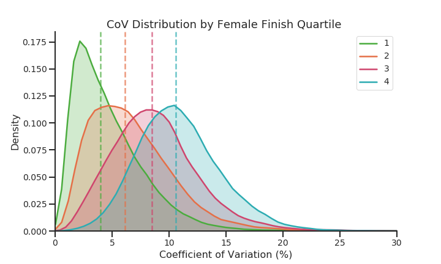
This tells us that runners who finish faster are more consistent, which comes at no surprise. However, keep in mind that these are just descriptive statistics.
Now we examine the effect of age on consistency and finish times.
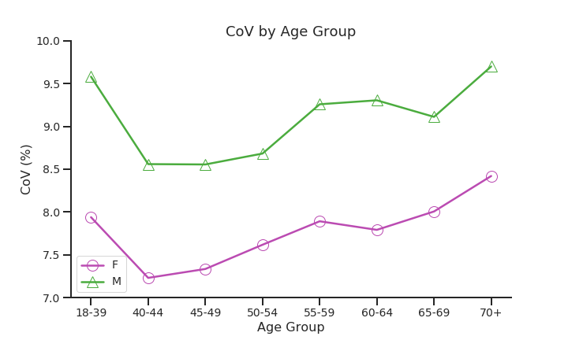
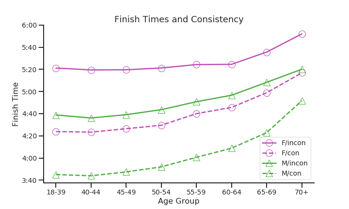
Again, we see that the 40-44 and 45-49 groups are not only the fastest on average, but also the most consistent; on the other hand, the youngest runners are just as inconsistent as the oldest runners!
Additionally, we can see that the consistent female runners are faster than inconsistent male runners across all age groups. This is to be expected, as consistent runners are more likely to be faster than inconsistent runners; gender is not enough to make up the difference that experience and training brings.
This leads us to the topic of race strategy: it’s clear before doing any substantive analysis that consistency, finish times, and experience are all related. One would expect a consistent runner to finish the fastest; so let’s look at the most consistent runners - the even split runners.
A common point of race discussion is whether you should run the first half of a race slower, faster, or roughly at the same pace of your second half. We call these ‘negative’, ‘positive’, and ‘even’ split strategies. In general, there is no good answer to this - in just about every event from the 800m to the marathon, world records have been set with all 3 strategies. However there is a general consensus that the longer the race, the more beneficial an even or negative split becomes.
With the marathon distance, this becomes of crucial importance - there’s a phenomenon that many first-time or inexperienced runners face called ‘hitting the wall,’ which is when the body runs out of fuel (glycogen) in the last few miles of the race. ‘For some, it results in being forced to walk; for others, it results in catastrophic shutdown and potential injury. In other words, you might be punished if you positive split and run too fast at the start. On the other hand, a large negative split might be indicative of a lack of effort at the beginning in which a runner leaves ’too much’ in the tank, causing them to finish slower than if they had ran an even split race. If you ask an experienced marathon veteran, chances are they’ll tell you to run even splits.
Now due to the extreme weather conditions of the 2018 race, I have excluded those results from this analysis (since the weather conditions almost invariably forced a positive split strategy). However, it’s worth noting that when the results were included, it didn’t change the distribution of split types since they were already so heavily skewed. With that in mind, let’s dive in.
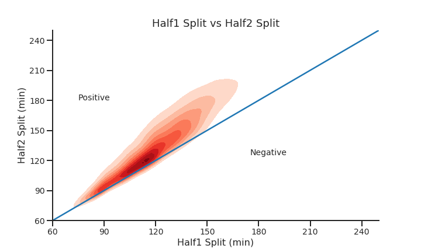
The results are telling: the vast majority of people positive split, whether by choice or necessity.
But what’s the best way to define an even split? A common way to do this is to take the split difference (half2 - half1) divided by their finish time, in other words the split difference percentage (SDP). Dividing by the finish time helps to standardize runners by their finish time. A positive split difference results in a positive SDP, and likewise with negative. I then defined an even split as an SDP between -1% and 1%, which led to roughly 10% of runners being categorized as even split runners.
\[\text{Split Difference } \% = \frac{\text{Half2} - \text{Half1}}{\text{Finish Time}}\]
| Negative | Even | Positive |
|---|---|---|
| SDP \(<\) -1% | -1% \(\leq\) SDP \(\leq\) 1% | SDP \(>\) 1% |
Note that this threshold is somewhat arbitrary, but gives us a substantial number of even split runners to work with. Here are some example splits of a few even split runners sampled from various percentiles.
| Percentile | 5K | 10K | 15K | 20K | 25K | 30K | 35K | 40K | 42.2K | Finish Time |
|---|---|---|---|---|---|---|---|---|---|---|
| 1% | 17:32 | 17:46 | 17:52 | 18:13 | 17:58 | 17:56 | 18:04 | 18:10 | 07:50 | 02:31:17 |
| 5% | 19:51 | 19:39 | 19:49 | 19:34 | 19:22 | 19:23 | 19:26 | 19:42 | 08:38 | 02:45:20 |
| 10% | 20:48 | 20:36 | 20:57 | 20:44 | 20:35 | 20:21 | 20:18 | 20:51 | 09:59 | 02:55:04 |
| 25% | 23:49 | 22:42 | 22:36 | 22:50 | 22:56 | 23:02 | 23:21 | 23:37 | 10:07 | 03:14:54 |
| 50% | 25:53 | 26:50 | 26:09 | 26:16 | 26:13 | 26:39 | 26:55 | 27:00 | 11:41 | 03:43:32 |
| 75% | 27:33 | 29:29 | 29:10 | 29:46 | 30:40 | 28:00 | 28:54 | 29:51 | 13:54 | 04:07:13 |
This helps put into perspective how few runners ran a true negative split.
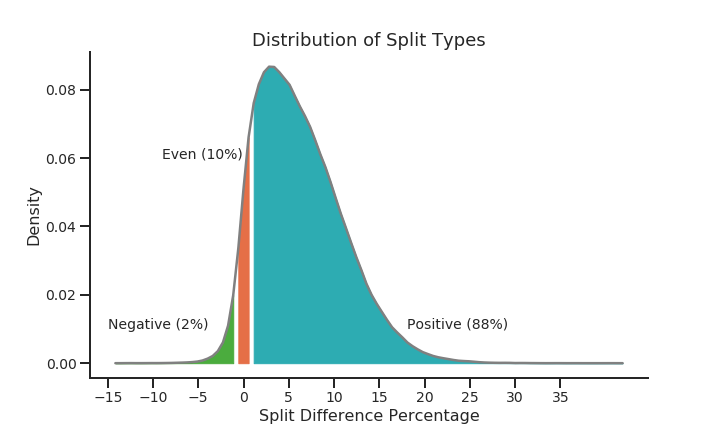
So what’s the best split strategy? As shown below, when we stratify by gender and quartile we can clearly see that positive split runners are the slowest in every category.
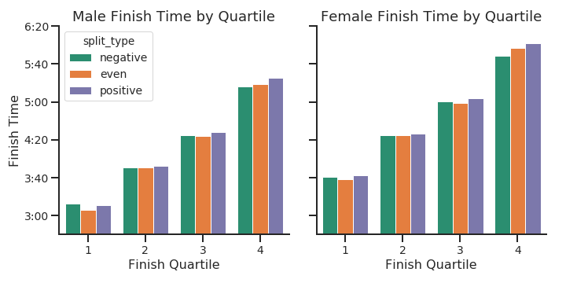
However, it’s not immediately clear which of negative or even splits wins; even splits were only significantly faster for Male/Female 1st quartile. Can we do better?
Remember our consistency metric, coefficient of variation? How does the split difference percentage relate to CoV? Of course, these two metrics differ in what what they’re trying to measure: SDP only cares about your half splits but also takes into account the direction of the split (was it positive or negative?), while CoV cares about all of your 5K splits and is concerned with whether they’re close to the average split (it’s only positive). So one flaw with SDP is that it’s not the best way to measure whether a runner ran even splits - for example, let’s take a 3:00 runner: they could run perfectly equal first/second halves at 90 min each, but suppose their quarter splits were 50/40/50/40 (which would equate to roughly 8:24/5:18 pace).
It turns out that if you take the all the runners with a CoV in the top 5%, 83% of them are categorized as even split runners. The following graph helps to illustrate the relationship between CoV and SDP.
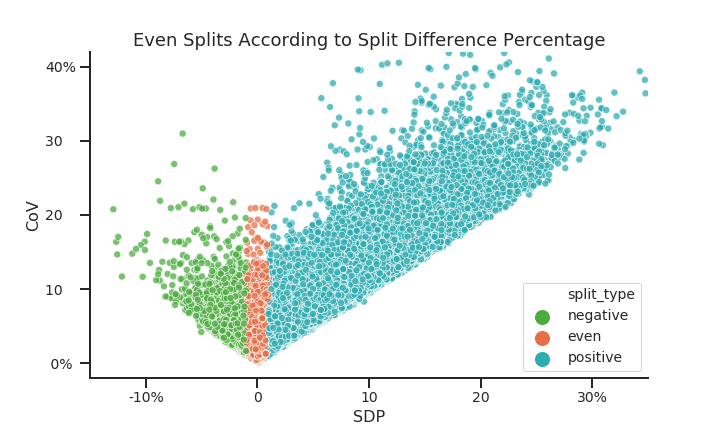
So if we wanted to categorize runners as even/noneven, we could also set an arbitrary CoV threshold, and then compare the results between even/noneven runners. Here the threshold is set to CoV \(<\) 2.3, which sets the percent of even runners to roughly 10% (which is what we had with SDP).
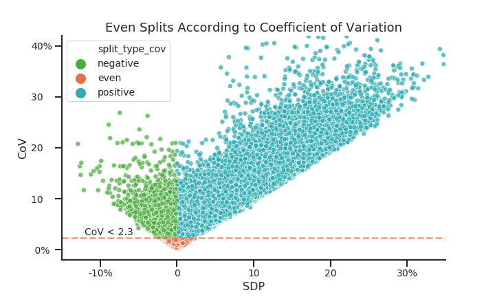
Just by looking at the differences between the two plots, we can easily visualize which subset of runners we’re choosing: the SDP definition selected a fair amount of inconsistent runners, whereas the CoV definition selects only consistent runners. Now if we rerun our analysis of whether even splits beat negative splits (using the Benjamini–Hochberg procedure to correct for false discovery rate), here’s what happens:
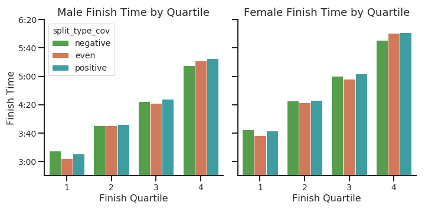
Under our new CoV definition of even splits, even split runners beat out negative split runners significantly for all groups except the 4th quartile (male and female). One possible explanation might be that 4th quartile finishers might be less likely to race against the clock as opposed to simply wanting to finish.
In other words, classifying even split runners using CoV instead of the SDP leads to a more meaningful analysis since the CoV metric considers multiple times across the race as opposed to just the first/second half and finish.
If we restrict our analysis to the 10 total finishers (men and women) per year (excluding 2018), 5 ran even splits, 3 ran positive splits, and 2 ran negative splits. The fastest times 3 of the 5 even splits were from Eliud Kipchoge (2016, 2017, 2019), the current men’s marathon world record holder, the current men’s course record holder, and a 4 time London winner.
Mary Keitany, the current women’s course record holder, current women’s marathon world record holder (women only race), and 3 time London winner, ran a rather large positive split of 3:13 in 2017.
Brigid Kosgei, the current women’s marathon world record holder (mixed race), ran a significantly large negative split of -4:56 in 2019.
| year | gender | name | split_Half | split_Half2 | split_Finish | split_delta | split_type_cov |
|---|---|---|---|---|---|---|---|
| 2014 | F | kiplagat, edna | 01:09:17 | 01:11:04 | 02:20:21 | 01:47 | even |
| 2014 | M | kipsang, wilson | 01:02:31 | 01:01:58 | 02:04:29 | -00:33 | even |
| 2015 | F | tufa, tigist | 01:11:43 | 01:11:39 | 02:23:22 | -00:04 | negative |
| 2015 | M | kipchoge, eliud | 01:02:20 | 01:02:22 | 02:04:42 | 00:02 | even |
| 2016 | F | sumgong, jemima | 01:10:45 | 01:12:13 | 02:22:58 | 01:28 | positive |
| 2016 | M | kipchoge, eliud | 01:01:24 | 01:01:41 | 02:03:05 | 00:17 | even |
| 2017 | F | keitany, mary | 01:06:54 | 01:10:07 | 02:17:01 | 03:13 | positive |
| 2017 | M | wanjiru, daniel | 01:01:43 | 01:04:05 | 02:05:48 | 02:22 | positive |
| 2019 | F | kosgei, brigid | 01:11:38 | 01:06:42 | 02:18:20 | -04:56 | negative |
| 2019 | M | kipchoge, eliud | 01:01:37 | 01:01:00 | 02:02:37 | -00:37 | even |
If we expand our split profiles to the top 3 finishers in each age category, the results are surprising.
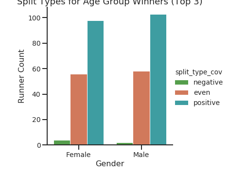
While there are quite a number of even split runners, it turns out that even the fastest runners across gender and age categories still overwhelmingly tend to run positive splits, and almost nobody runs a negative split race. So you shouldn’t feel too bad in your next race if your race strategy doesn’t pan out the way you’d like; very, very few people run true negative or even split marathons.
One final remark on even splits: repeat runners in 2019 were 4% more likely to run even splits than nonrepeat runners, which is to be expected.
Here’s a TL;DR:
By stratifying across various categories (age, gender, consistency, finish time quartile), I’ve provided some substantial evidence towards the relationship between pacing and performance, which have also been observed through analyses of many other major marathons. This is just another data point toward the collective, sage advice of ‘don’t run positive splits.’
One final note: London 2020 features a highly anticipated matchup between two running greats while also giving us a preview for the 2020 Olympic Marathon race in Japan. Eliud Kipchoge, the current men’s marathon world record holder at 2:01:39 and the only person to run below 2:00 for the marathon distance, will face off against arguably the greatest distance runner of all time, Kenenisa Bekele, who holds both the 5K and 10K world records and ran the second fastest marathon of all time at 2:01:41 (missing Kipchoge’s record by a mere 2 seconds). London 2020 will take place on Sunday, April 26th.
References